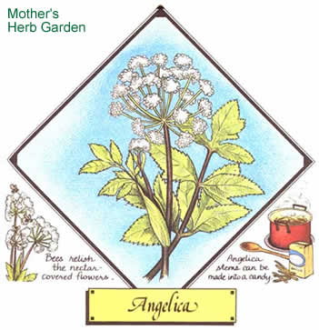

Lately, more and more people have begun to understand just how limited-in both variety and nutritional value?our "modern" diets have become. This realization has sparked a new and widespread interest in the culinary and therapeutic uses of herbs ... those plants which -although not well-known today?were, just one short generation ago, honored "guests" on the dinner tables and in the medicine chests of our grandparents' homes. In this regular feature, MOTHER will examine the availability,cultivation, and benefits of our "forgotten" vegetable foods and remedies . . . and?we hope-help prevent the loss of still another bit of ancestral lore.
There's nothing insignificant about Angelica archangelica! Towering up to eight feet tall, with large, bright green, toothed leaves and clusters of fragrant, yellowish green flowers, this hardy giant was once considered the most powerful of herbs, and today is still distinguished by the number and variety of its uses. Perhaps it's best known as a candy-which is made by cooking the hollow, fluted stems in copious amounts of sugar-but Its seeds are also one of the principal flavoring agents in vermouth, Chartreuse, and gin ... and may be the "secret ingredient" in certain Rhine wines. The herb's leaves can be used to flavor fish, poultry, cooked fruits, soups, or stews ... while its stems can be cut and prepared like asparagus, chopped and stewed with rhubarb and apples, minced in preserves and marmalade, or candied and cut up to serve as decorations on cakes and other confections.
This plant's uses aren't limited to the kitchen, however. Once considered a sovereign remedy for bubonic plague, it's been taken for centuries as a general
tonic and digestive aid, as well as a treatment for anemia, bronchitis, and chest complaints. Tea made from the leaves can be used as an eyewash or skin refresher, while as a bath additive, angelica's said to be good for the nerves. Compresses made from the leaves are also reputed to be helpful in cases of chronic gout Or rheumatism. Perhaps one of its more unusual applications, however, is as a tea that's used to treat alcoholism: Angelica apparently causes a strong dislike for liquor ... a curious attribute for an herb that's used to flavor several kinds of alcoholic beverages!
All parts (seeds, flowers, leaves, stem, and root) of this bee-relished plant are aromatic. The oil is used in perfumery, as is the root, which can serve as a substitute for musk and benzoin (a fixative). The seeds or pieces of dried root, If burned over a low fire, will restore freshness to a musty room.
Angelica can be started from root cuttings and offshoots taken the second year, or (preferably) from seeds ... which, however, don't keep well and must be planted immediately after ripening in late summer. The herb likes rich, moist, well-drained soil that's slightly acid ... and prefers semishaded areas, especially if they're near running water. Because the large, fiber-covered seeds need light to germinate, they should be planted in shallow drills and barely pressed into the soil. Later, it's advisable to cultivate the mature plants gently to improve air circulation and control weeds. Although angelica is not a true perennial, it may perform as one if you cut off the flower heads before they reach maturity (the plant dies after flowering).
Harvest the whole herb in July for medicinal purposes, cutting the plant directly above the root ... the stems in June or early July for culinary preparations ... the seeds when they ripen in late summer ... and the root in the autumn of the plant's first year.
It's best to use moderation when ingesting angelica. In large doses it may affect blood pressure, heart action, and respiration. And incidentally, unless you're an herb expert, stick with the cultivated variety (which has a better flavor than its wild sister, anyway). Wild angelica may be confused with water hemlock, a highly poisonous plant.
Angelica plants may be obtained from many sources, including [1] Sunnybrook Farms, Dept. TMEN, 9448 Mayfield Road, P.O. Box 6, Chesterland, Ohio 44026 (catalog $1.00), [2] Sandy Mush Herb Nursery, Dept. TMEN, Route 2, Surrett Cove Road, Leicester, North Carolina 28748 (catalog $1.00, refundable), and [3] Well-Sweep Herb Farm, Dept. TMEN, 317 Mount Bethel Road, Port Murray, New Jersey 07865 (catalog 750).
|
 |
|
|